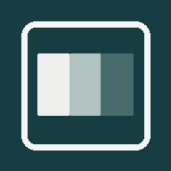
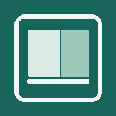

Value StudiesCrop; color and grayscale; exactly 2, 3, 4 values; multi-select export. Progressive BlurTurn a reference into progressively sharper stages; print the sequence.
Poster PrintingCrop and enlarge artwork across Letter/A4 sheets; save, share or print a tiled PDF.